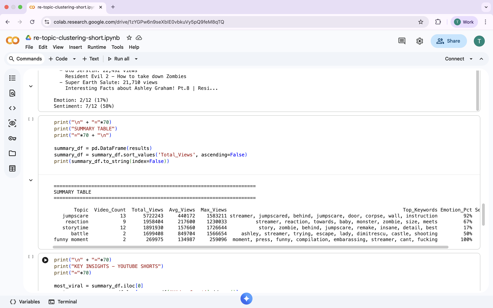

Topic Clustering — Resident Evil Requiem
A topic research pipeline built specifically for Resident Evil Requiem — collecting and clustering 300+ gameplay and reaction videos from the franchise to define the topic taxonomy for Eklipse.gg's Just Chatting AI model.

- Role
- AI & Data Intern
- Company
- Eklipse.gg
- Game Target
- RE Requiem
- Status
- Completed
Background
Eklipse.gg's Just Chatting model needs to understand what streamers are talking about during gameplay. For the model to classify topics accurately, it first needs a well-defined topic taxonomy specific to each game title. You can't label what you haven't defined.
This project tackled that problem for Resident Evil Requiem — an upcoming title at the time of research. Since there's no live gameplay data yet, the approach was to gather conversations from previous RE series gameplay videos and official teaser reaction videos, then use clustering to surface the most common and relevant discussion topics.
- No live RE Requiem gameplay data available yet
- Topic taxonomy undefined — can't label without it
- Manual topic discovery would be inconsistent and slow
- Collect 300+ relevant videos as data source
- Use clustering to discover natural topic groups
- Deliver a validated topic list for the annotation team
Research Pipeline
The pipeline runs from raw video collection all the way to a curated topic list. Each step is designed to progressively reduce noise and surface the signals that matter to the Just Chatting model.
Collected 300+ videos from two source types: gameplay videos from previous Resident Evil series titles (RE Village, RE4 Remake, RE2 Remake, etc.) and reaction videos from the official RE Requiem teaser. Video metadata — titles, descriptions, transcripts where available — was pulled via YouTube Data API and stored for processing.
Extracted textual signals from video titles, descriptions, and comment sections. Text was cleaned (lowercasing, stopword removal, punctuation stripping), then tokenized and prepared for vectorization.
Applied TF-IDF vectorization to convert cleaned text into numerical representations. TF-IDF was preferred here because it naturally downweights generic terms (e.g. "video", "game") and amplifies domain-specific vocabulary that's more useful for topic discovery.
Ran K-Means clustering on the TF-IDF vectors. The optimal number of clusters was determined using the elbow method. Each cluster was then manually reviewed to interpret and name the underlying topic it represented.
Cluster results were reviewed with the team to validate topic relevance and consolidate overlapping clusters. The final validated topic list was handed off to the annotation team as the taxonomy for labelling the Just Chatting audio dataset.
Topic Results
Clustering surfaced several recurring discussion themes that naturally emerged from the RE community — spanning gameplay mechanics, lore, characters, and community reactions to the new title.
Combat strategies, puzzle solving, inventory management, boss fight reactions, and difficulty discussions.
Narrative theories, connections to previous RE titles, lore discussions, and storyline speculation for Requiem.
Character reactions, appearance discussions, protagonist/antagonist commentary, and new character reveals in Requiem teaser.
Scare reactions, atmosphere commentary, tension build-up discussions, and comparisons of horror intensity across RE titles.
Comparisons between RE Requiem and previous entries — visual quality, gameplay direction, tone, and whether it fits the classic RE formula.
Fan excitement, teaser reactions, anticipation for release, wishlist discussions, and general community sentiment about RE Requiem.